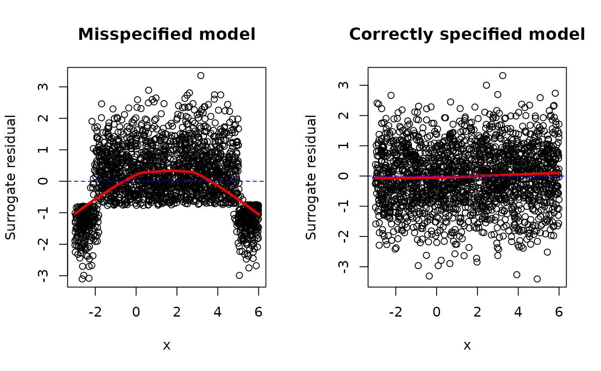
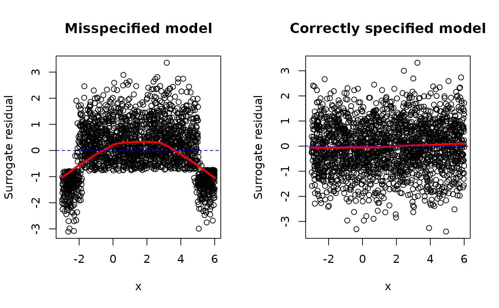

Simulate surrogate response values for cumulative link regression models using the latent method described in Liu and Zhang (2017).
Arguments
- object
- method
Character string specifying which method to use to generate the surrogate response values. Current options are
"latent"and"uniform". Default is"latent".- jitter.uniform.scale
Character string specifying the scale on which to perform the jittering whenever
method = "uniform". Current options are"response"and"probability". Default is"response".- nsim
Integer specifying the number of bootstrap replicates to use. Default is
1Lmeaning no bootstrap samples.- ...
Additional optional arguments. (Currently ignored.)
Value
A numeric vector of class c("numeric", "surrogate") containing
the simulated surrogate response values. Additionally, if nsim > 1,
then the result will contain the attributes:
boot_repsA matrix with
nsimcolumns, one for each bootstrap replicate of the surrogate values. Note, these are random and do not correspond to the original ordering of the data;boot_idA matrix with
nsimcolumns. Each column contains the observation number each surrogate value corresponds to inboot_reps. (This is used for plotting purposes.)
Note
Surrogate response values require sampling from a continuous distribution;
consequently, the result will be different with every call to
surrogate. The internal functions used for sampling from truncated
distributions are based on modified versions of
truncdist:rtrunc and truncdist:qtrunc.
For "glm" objects, only the binomial() family is supported.
References
Liu, D., Li, S., Yu, Y., & Moustaki, I. (2020). Assessing partial association between ordinal variables: quantification, visualization, and hypothesis testing. Journal of the American Statistical Association, 1-14. doi:10.1080/01621459.2020.1796394
Liu, D., & Zhang, H. (2018). Residuals and diagnostics for ordinal regression models: A surrogate approach. Journal of the American Statistical Association, 113(522), 845-854. doi:10.1080/01621459.2017.1292915
Nadarajah, S., & Kotz, S. (2006). R Programs for Truncated Distributions. Journal of Statistical Software, 16(Code Snippet 2), 1 - 8. doi:10.18637/jss.v016.c02
Examples
# Generate data from a quadratic probit model
set.seed(101)
n <- 2000
x <- runif(n, min = -3, max = 6)
z <- 10 + 3*x - 1*x^2 + rnorm(n)
y <- ifelse(z <= 0, yes = 0, no = 1)
# Scatterplot matrix
pairs(~ x + y + z)
 # Setup for side-by-side plots
par(mfrow = c(1, 2))
# Misspecified mean structure
fm1 <- glm(y ~ x, family = binomial(link = "probit"))
s1 <- surrogate(fm1)
scatter.smooth(x, s1 - fm1$linear.predictors,
main = "Misspecified model",
ylab = "Surrogate residual",
lpars = list(lwd = 3, col = "red2"))
abline(h = 0, lty = 2, col = "blue2")
# Correctly specified mean structure
fm2 <- glm(y ~ x + I(x ^ 2), family = binomial(link = "probit"))
#> Warning: glm.fit: fitted probabilities numerically 0 or 1 occurred
s2 <- surrogate(fm2)
scatter.smooth(x, s2 - fm2$linear.predictors,
main = "Correctly specified model",
ylab = "Surrogate residual",
lpars = list(lwd = 3, col = "red2"))
abline(h = 0, lty = 2, col = "blue2")

dev.off() # reset to defaults once finish
#> null device
#> 1
# Setup for side-by-side plots
par(mfrow = c(1, 2))
# Misspecified mean structure
fm1 <- glm(y ~ x, family = binomial(link = "probit"))
s1 <- surrogate(fm1)
scatter.smooth(x, s1 - fm1$linear.predictors,
main = "Misspecified model",
ylab = "Surrogate residual",
lpars = list(lwd = 3, col = "red2"))
abline(h = 0, lty = 2, col = "blue2")
# Correctly specified mean structure
fm2 <- glm(y ~ x + I(x ^ 2), family = binomial(link = "probit"))
#> Warning: glm.fit: fitted probabilities numerically 0 or 1 occurred
s2 <- surrogate(fm2)
scatter.smooth(x, s2 - fm2$linear.predictors,
main = "Correctly specified model",
ylab = "Surrogate residual",
lpars = list(lwd = 3, col = "red2"))
abline(h = 0, lty = 2, col = "blue2")

dev.off() # reset to defaults once finish
#> null device
#> 1